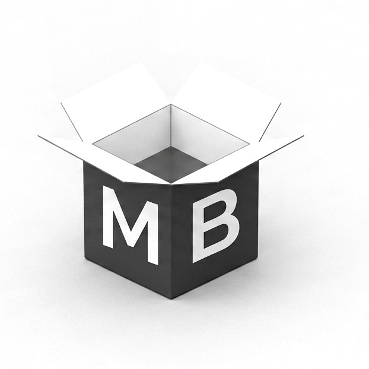

01
MONOBASE
SINCE 2026
良い点も、不満点も。
買う前に「リアル」が見える
商品紹介サイト
口コミ・仕様・価格を徹底的に調査し、
購入判断に必要な情報を整理してお届けします。

口コミを分析口コミを分析
良い点も悪い点も
包み隠さず紹介
徹底調査徹底調査
仕様・価格・競合まで
多角的に比較
購入判断をサポート購入を判断
向いている人・向いていない人を
明確に整理


RANKING
よく読まれている記事
よく読まれている記事
01


ANUA PDRNセラム 口コミ｜使用感と購入前の確認点
口コミの評価が分かれる理由と、買う前に販売ページで確認したい5項目を整理。
02不二貿易 86078 口コミ｜踏み台兼用スツールの仕様と合う人
重量1.45kg・耐荷重150kg・厚さ45mm。踏み台と腰掛けを兼ねたい人向けの1台を仕様と口コミから分析。
03ChromeLite×UltraCush 口コミ｜静音性と衝撃吸収の評価
静音性の評価は揃い、衝撃吸収は割れる。その理由と購入前の確認項目を整理。
04Vivcon キャリーケース 40L｜フロントオープンの選び方と確認点
前面が開く構造が効く人・効かない人と、購入前に販売ページで確認すべき項目を整理。
05クレーリナ マスカラ 口コミ｜ダマになりにくさと合う人
公式仕様と口コミから、お湯オフ処方の実像とナチュラルロング設計が合う人を整理。